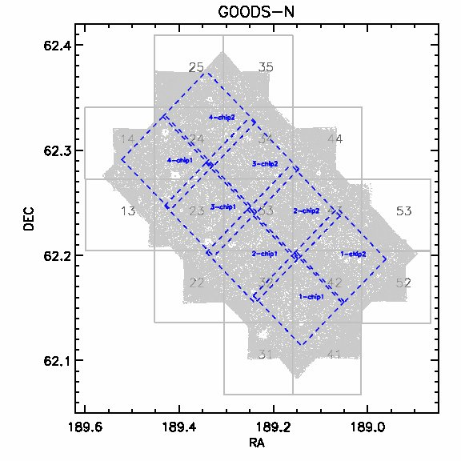

|
GOODS-N Field showing the MOIRCS Pointings (blue squares) on the GOODS tiles.
|
|

|
|
Raw data of Subaru (8.2m)/MOIRCS (FOV 4'x7') imaging of GOODS-N field
is publicly available. This reduction was done by Nimish Hathi (UCR)
with the help of Peter Capak (Caltech), Bahram Mobasher (UCR) and
Wei-Hao Wang (NRAO) using IDL
software SIMPLE
written by Wei-Hao. For current reduction, we have used data observed
in 2006-2007.
MOIRCS J,H and K coverage (blue dashed squares) of GOODS-N field is
shown on left. MOIRCS has four (1-4) main fields. Each field is
divided into 'chip1' and 'chip2'. Each 'chip' is ~4'x3.5' in size. So
both 'chips' combine image covers full MOIRCS FOV.
Reduced data includes science images and exposure time maps. Median
seeing is ~0.7". Science images are in ADU/secs with 0.15"/pix. Gain
(e-/ADU) slightly varies between 'chip1' and 'chip2'. Zeropoint AB
mag for J-band is 25.965 mag and for K-band is 26.145 mag (for
comparison Wei-Hao's zeropoints are within ~ +/- 0.05 mag). Zeropoint
AB mag for H-band is 26.569 mag. Depth may vary slightly between each
field and also between 'chip1' and 'chip2'. We are including 'chip1',
'chip2' and combine images.
|